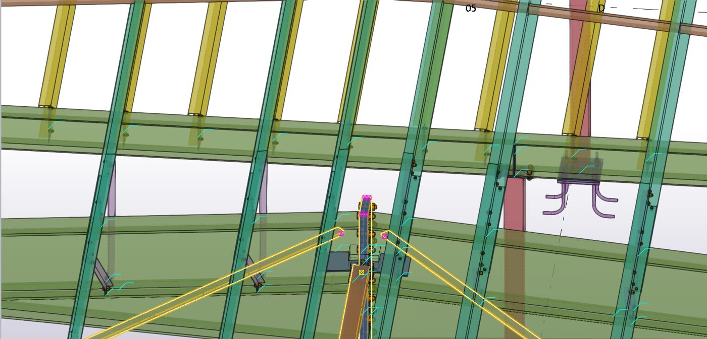
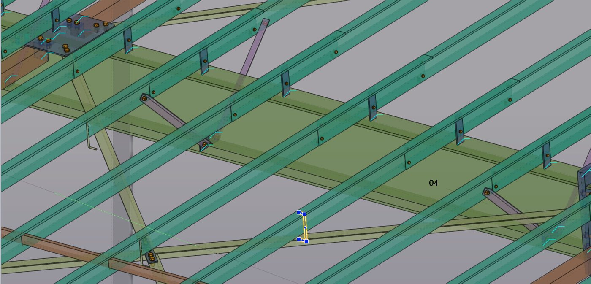
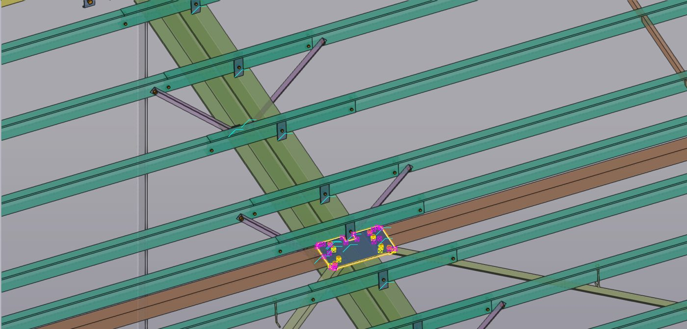
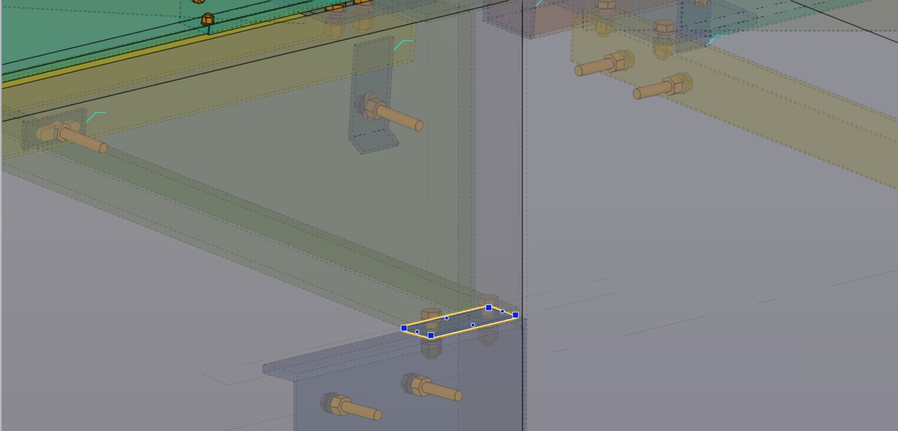
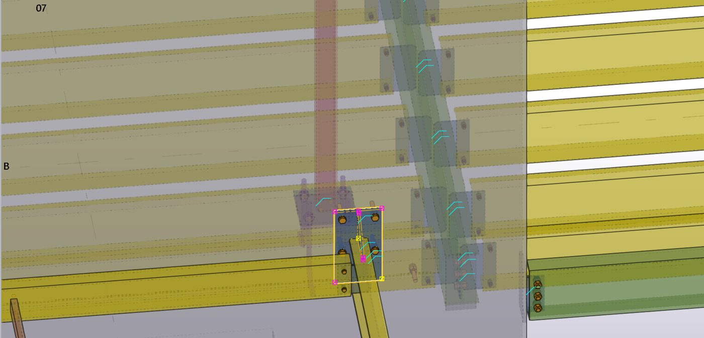
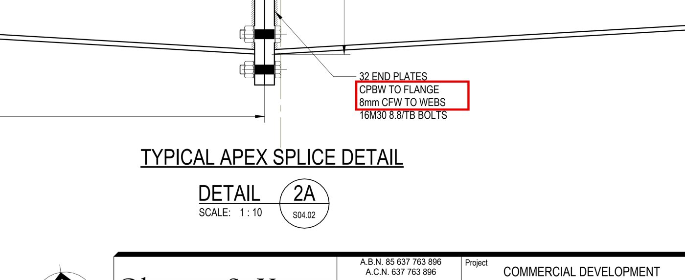

A complete steel model built from the tender drawings with an AI assistant, from an empty grid to a checked model in about 14 hours of work.
Structural: Olivotto & Young Consulting 26430, S00.00–S06.03. Architectural: Struxi Design 252232, WD 000–N01. Every place the model departs from the drawings is a logged decision; every open question is an RFI with a proposal.
What the AI-assisted workflow delivered on this job, and where it stands now.
From an empty Tekla grid to a full, checked steel model with connections, welds and attributes.
Built from the engineer's details. Clash, gap, weld and attribute checks on the whole model; 0 open real clashes; every deviation logged with the reason.
Drawing reading, checks and RFI drafting run alongside the modelling. Each change is trial-run, read back and saved, so nothing is left half-done.
Names, profiles, grades, finish, tags, bolts and welds carried into the IFC, ready for review in any IFC viewer.
185 logged decisions, a timed work log and check reports: every change can be traced and undone.
16 RFIs are with proposals. Once they are confirmed, the model is updated, the final IFC is issued and shop drawings can start.
The IFC carries member names, profiles, materials, finish and tags, bolts, and welds as objects with type, size and shop/site.
1,678 beams, 398 columns, 1,662 plates, 167 members, 3,506 bolt groups, 1,761 welds.
Download IFC ↓16 RFIs, each with red-boxed drawing crops and Proposal A / B.
Download RFI pack ↓Members, connections, holes, welds and attributes to shop-drawing depth. Purchased items (bridging, rod-end kits, taper washers) are modelled as parts so they count and clash.
610UB portal rafters on 5 frames, haunches, apex splices with 16-M30 end plates, field splices.
249 Z/C purlins with laps and cleats, 466 bridging, brace angles, SHS struts, 128 fly braces, hook rods controlling brace sag.
TR1 in three transport pieces, TR2 ×5, TR3 — 67 members, shop-welded.
28 SHS columns, beams, 195 floor joists, landing, stringers with base plates and cast-in anchors.
About 130 cast-in ferrule bolt groups with blind holes in the tilt panels, embed plates, panel clips, mid-span weld plates.
Three awnings with moment end plates to detail 7A; 112 cogged hold-down rods with templates, nuts and washers.
Each check ran on the whole model after each batch of changes. Findings were sorted into classes; the detailer accepted or rejected each class.
| Check | Scope | Result |
|---|---|---|
| Tekla native clash | Whole model, 927 events | 0 open real clashes. All events are bolts into their own ferrules, hold-down rods in templates, hook rods in purlin slots, or bolt space confirmed by a solid check. |
| Gap check | 2,136 bolt groups, 1,806 welds | 135 findings → 62 real fixed (5° taper packer, stray weld, 66 cleats seated) → 71 left, all accepted design classes. Method proven against Tekla's grip length on all 2,136 groups. |
| Weld check | 1,799 weld objects vs details 2A, S04.10–13, note S9 | 212 corrected, 86 changed after a decision, 12 raised as RFI. |
| Attributes | 3,926 parts | Name, profile, material, class on every part. Finish HDG on 2,932 parts; 932 cold-formed (pre-galvanised) kept apart. |
| Bolt installation space | Joist end cleats | 11 joists moved clear of the beams so every bolt has socket room. |
The model is changed by small single-purpose scripts. Reading drawings, checking and drafting RFIs run in the background while the model is written one change at a time.
Modelling and checking time for the whole steel package.
Each script runs a dry run first, reads its result back, then saves. A failed write rolls back and is logged.
Repeated changes are shown on one sample in Tekla before they are applied to the rest.
Every steel part from the Tekla model, simplified for the browser: holes, bolts are included; welds are left out. Drag to orbit, right-drag or two fingers to pan, scroll or pinch to zoom. Click a part to see its tag.
Screenshots from Tekla. The IFC below opens in any IFC viewer, including Trimble Connect.






The detailer decides; the assistant records, checks and proposes.